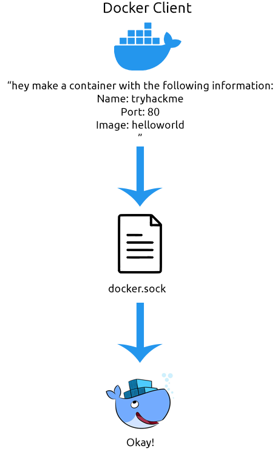
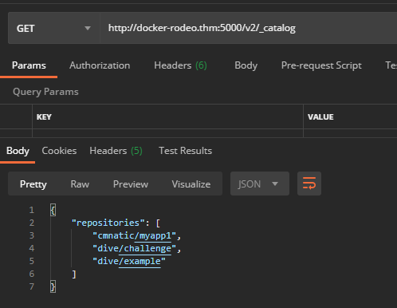

Docker Socket
This task will explain how Docker interacts between the operating system and the container. When you install Docker, there are two programs that get installed:
1. The Docker Client
2. The Docker Server
Docker works in a client/server model. Specifically, these two programs communicate with each other to form the Docker that we know and love. Docker achieves this communication using something called a socket. Sockets are an essential feature of the operating system that allows data to be communicated.
For example, when using a chat program, there could be two sockets:
1. A socket for storing a message that you are sending
2. A socket for storing a message that someone is sending you.
The program will interact with these two sockets to store or retrieve the data within them! A socket can either be a network connection or what is represented as a file. What's important to know about sockets is that they allow for Interprocess Communication (IPC). This simply means that processes on an operating system can communicate with each other!
In the context of Docker, the Docker Server is effectively just an API. The Docker Server uses this API to
listen for requests, whereas the Docker Client uses the API to
send requests.
For example, let's take this command:
docker run helloworld. The Docker Client will request the Docker server to run a container using the image "helloworld". Now, whilst this explanation is fairly basic, it is the essential premise of how Docker works.
Let's look at the following diagram to show this process in action:
What's interesting is that because of this, we can interact with the Docker Server using commands like
curl or an API developer tool such as Postman. Now, using this is out of the scope for this room, but I'll demonstrate communicating with the Docker Server using Postman to list all images that are stored on the operating system:
Finally, it's important to note that because of this, the host machine running Docker can be configured to process commands sent from another device. This is an extremely dangerous vulnerability if it is not correctly configured because it means someone can remotely stop, start, and access Docker containers. Despite this, there are use cases where this feature of Docker is extremely helpful! We will cover this in further detail in a later room!
{kind=link}
{kind=link}